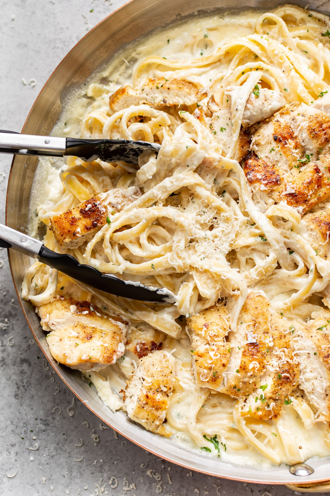

Chicken Fettuccine Alfredo

Description
This version of chicken fettuccine alfredo is lightened by substituting
some of the heavy cream with chicken broth.
Ingredients
- 2 large boneless skinless chicken breasts
- 2 cups low-sodium chicken broth
- 4 cloves garlic, minced
- ground black pepper to taste
- 2 cups heavy cream
- 2 egg yolks
- salt to taste
- 1 pound fettuccine
- 1 sprig chopped fresh parsley
- 2 cups freshly grated Parmigiano-Reggiano cheese, divided